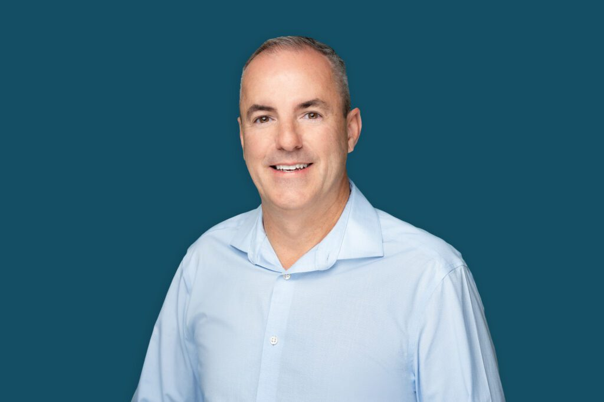

Managed IT
Systems, Microsoft 365, endpoints, troubleshooting, projects, and ongoing support.
Business Technology Solutions
Practical IT solutions, security, and hands-on technology support for businesses in the Boaz–Albertville–Guntersville and Gadsden–Rainbow City areas.
Technology guided by people.
Latest CISA Known Exploited Vulnerability
Checking CISA KEV…
Rennie IT can help you identify exposure and prioritize remediation.
Business Technology Solutions
Practical technology support, security, risk guidance, and recovery planning for local businesses.
Systems, Microsoft 365, endpoints, troubleshooting, projects, and ongoing support.
Endpoint protection, MFA, hardening, backups, and practical safeguards for business technology.
HIPAA, IT risk assessments, controls, vendor risk, and audit readiness with clear priorities.
Explore Risk & Compliance →Backup validation, disaster recovery planning, restore testing, and recovery readiness.

About Rennie IT
Rennie IT is a business technology company based in Boaz, Alabama, serving businesses in Boaz, Albertville, Guntersville, Gadsden, Rainbow City, Attalla and surrounding communities.
I'm Robert Rennie, founder of Rennie IT.
I've spent more than 20 years working with business technology — from hands-on systems and infrastructure to cybersecurity, IT audit, and technology risk.
I started Rennie IT to bring that experience directly to local businesses. Whether I'm helping solve a technology problem, implementing an improvement, or providing an independent assessment, the goal is the same: understand what the business needs and make technology work for it.
Technology guided by people.
Local Technology Support
Serving businesses across Boaz, Albertville, Guntersville, Gadsden, Rainbow City, Attalla, and surrounding communities.
Focused Solutions
Dedicated guidance for environments where reliability, security, and technology risk matter every day.
Free Website Self-Assessment
See how clearly your website communicates with search engines and AI-powered discovery tools using Rennie IT’s transparent 100-point scorecard.
Start a Conversation
Tell Rennie IT what is not working, what you are planning, or where you need help. Start with a straightforward conversation.
Email Rennie ITReady to talk? Reach out directly to get started.